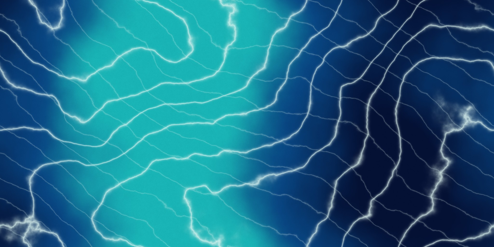

Bedienung
| Eingabe | Wirkung |
|---|---|
| ← → oder A D | Kamera um den Torus nach links bzw. rechts schwenken. |
| ↑ ↓ oder W S | Kamera nach oben bzw. unten schwenken. |
| E / + und Q / - | Heranzoomen und Wegzoomen (zusätzlich). |
| 1 / 2 | Bildtextur bzw. prozedurale Textur anzeigen. Entspricht den beiden Buttons unter der Szene. |
| Leertaste | Drehung des Torus an- oder ausschalten. |
| R | Kamera zurücksetzen. |
| Maus ziehen / Mausrad | Kamera drehen bzw. zoomen (zusätzlich). |
Bearbeitet
- Grundaufgabe: Torus mit Bildtextur. Zur Geometrie (Positionen, Normalen) wurden Texturkoordinaten hinzugefügt.
- Erweiterung: Prozedurale Textur im Fragment-Shader, per Button umschaltbar und wieder zurückschaltbar.
Texturkoordinaten
Der Torus wird über zwei Winkel parametrisiert: φ läuft um den Ring, θ um den Schlauch. Die Texturkoordinaten sind daraus direkt abgeleitet:
u = φ / 2π und v = θ / 2π, jeweils im Bereich 0 bis 1.
Die erste und die letzte Vertexreihe liegen geometrisch an derselben Stelle, bekommen aber die Koordinaten 0 und 1. Dadurch wird die Textur einmal vollständig um den Ring und einmal um den Schlauch gelegt, ohne Lücke an der Naht. Die Bildtextur ist nahtlos kachelbar erzeugt, damit auch die Übergänge zwischen den Kanten unsichtbar bleiben.
Bildtextur

- Herkunft: Das Bild habe ich nicht aus dem Internet übernommen, sondern mit einem eigenen Python-Skript berechnet (
tools/generate_marble.py, numpy und Pillow). Es basiert auf keinem fremden Bildmaterial. - Verfahren: Aus kachelbarem 1/f-Rauschen (Filterung im Frequenzraum) entstehen großflächige Farbwolken von Dunkelblau über Blau nach Türkis. Hauptadern und feinere Nebenadern sind Sinuslinien, die mit dem Rauschen verzerrt werden. Mit ganzzahligen Wellenzahlen ist das Ergebnis in beiden Richtungen nahtlos.
- Laden in WebGL: Per
Image-Objekt, danntexImage2D, Mipmaps und Wiederholung (REPEAT), da die Größe eine Zweierpotenz ist. Bis das Bild geladen ist, wird ein türkiser Platzhalter angezeigt. Fehler beim Laden erscheinen in der Szene und in der Konsole.
Prozedurale Textur (Erweiterung)
Die Textur entsteht komplett im Fragment-Shader aus den Koordinaten (u, v), ohne Bilddatei. Zum Motiv Donut passt der Torus von selbst.
- Glasur: Die Höhe
sin(2π·v)wird mit einer welligen, periodischen Kante verglichen. Oberhalb der Kante liegt rosa Glasur, an einigen Stellen mit herunterlaufenden Tropfen. Am Rand ist sie etwas heller. - Teig: Goldbraun, zur Unterseite hin dunkler, mit einer feinen Körnung aus periodischem Value-Noise.
- Streusel: Ein Raster aus 48 × 20 Zellen. Jede Zelle erhält per Hash-Funktion eine Wahrscheinlichkeit, einen Versatz, einen Drehwinkel und eine von sechs Farben. Gezeichnet wird je eine Kapsel. Da die Zellzahl ganzzahlig ist, passt das Raster nahtlos um den Torus.
- Material: Die Glasur glänzt (enger Glanzpunkt), der Teig ist matt.
Beleuchtung
Beide Texturen werden mit einer Blinn-Phong-Beleuchtung pro Fragment verknüpft (ambient, diffus, spekular). Das Licht ist fest im Weltkoordinatensystem, die Kamera bewegt sich unabhängig davon.
Test und QA
- Getestet werden sollte: Kamera mit Pfeiltasten und WASD in alle Richtungen, mehrfaches Umschalten der Textur, Drehung an und aus, Fenstergröße ändern.
- Shader- und Ladefehler werden in der Browser-Konsole ausgegeben und über der Szene angezeigt.
- Beim lokalen Testen die Seite über einen Webserver öffnen, z. B. mit
python3 -m http.server, da Browser Bilder als WebGL-Textur vonfile://blockieren (CORS).
Quellen
- Lerneinheiten 1–15, insbesondere TXR (Texturen).
- MDN: Using textures in WebGL (Laden von Bildtexturen, Regeln für Nicht-Zweierpotenz-Größen).
- Wikipedia: Torus (Parametrisierung).
- Wikipedia: Perlin-Noise und Prozedurale Textur (Idee von Rauschfunktionen und prozeduralen Texturen).
Der Quellcode (main.js, generate_marble.py) und die Bildtextur wurden für diese Aufgabe selbst erstellt. Fremdes Bild- oder Codematerial wird nicht verwendet.